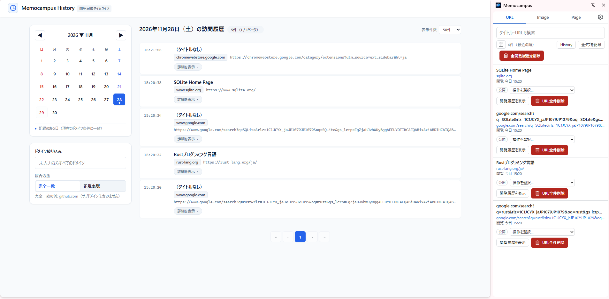

閲覧記録と検索・カレンダー振り返り
通常ウィンドウの http:// / https:// ページ閲覧（URL・タイトル・日時・ページメタデータおよび遷移情報）を記録します。サイドパネルや履歴ビューからキーワード検索や日付・カレンダーで再発見できます。
Memocampusは、日々のWeb閲覧の記録や手動保存した画像・ページを自分のPC内のローカルVaultに蓄積し、後から検索・再発見するための個人向けソフトウェアです。クラウドサービスに履歴を預けるのではなく、手元の環境で管理・保護することを前提に設計しています。
ご利用には Chrome 拡張機能と Windows 向けローカルコンポーネント（GitHub Release 配布）の両方が必要です。

Memocampusは、単なるブックマーク管理ツールではありません。「いつ・どのページを見たか」という閲覧の流れ、ページのタイトルやメタデータ、そして残しておきたい画像やMHTMLスナップショットをローカルのデータベース（Vault）に記録し、記憶をたどるように振り返るためのツールです。
Google Chrome拡張機能とWindows向けローカルコンポーネント（Native Messaging Host・トレイ常駐補助・読み取り専用MCPサーバー）を組み合わせて動作します。自動記録はインストール直後に無断で開始されることはなく、Vaultの作成または選択後に利用者自身が明示的に開始します。
通常ウィンドウの http:// / https:// ページ閲覧（URL・タイトル・日時・ページメタデータおよび遷移情報）を記録します。サイドパネルや履歴ビューからキーワード検索や日付・カレンダーで再発見できます。
右クリックメニューから画像（原本・サムネイル・タグ付け対応）やWebページのMHTMLスナップショットを手動保存できます。サイドパネルから開いている通常タブの一括スナップショット記録も可能です。
保存した訪問履歴・画像・MHTMLページはプレビュー確認のうえで個別に削除できます。画像やMHTMLのエクスポート、Vaultのバックアップおよび新規ファイルへの復元にも対応しています。
記録されたデータは開発元のサーバーではなく、利用者自身のPC上の単一SQLiteファイル（ローカルVault）に保存されます。%LOCALAPPDATA%\Memocampus\memocampus.sqlite3 は初期設定時の既定候補パスであり、インストールや起動時に暗黙に作成されることはありません。Vaultは利用者が明示的に作成または既存ファイルを選択して利用し、設定済みVaultが見つからない場合も自動再作成は行いません（ローカルフォルダの選択が可能で、ネットワークドライブ等は禁止、クラウド同期フォルダ等は明示的な承認が必要です）。
セキュリティ上の注意：暗号化はファイル保存時の保護を高める仕組みであり、同一Windowsユーザー権限で動作するマルウェアやロック解除済み端末への不正アクセス、Recovery Spellの漏えいなど、あらゆる脅威を防ぐものではありません。詳細はプライバシーポリシー（保存場所と暗号化）をご確認ください。
Memocampusは、記録してはいけない領域と外部AIへ渡したくない領域を分けるため、Privacy Gate（ポリシーエンジン）を備えています。ポリシーが未初期化または読み込めない場合は記録を停止するフェイルクローズ設計です。
認証画面、機密クエリパラメータ、行政ポータル、Webメール、主要AIチャット等の既定ルールおよびカスタムルールに一致するURLの自動記録を抑止します。なお、既存のVault記録を自動削除したり、利用者の明示的な画像・MHTML手動保存を全面禁止したりする機能ではありません。
ローカルのVaultには通常どおり記録しつつ、MCP（AI連携）からの検索・集計・参照対象からは完全に除外する領域です。
Memocampusは、ローカルのMCPサーバー（memocampus-mcp）を通じて、対応するAIクライアントからVault内の公開許可済みデータを読み取り専用で検索できる機能を提供します。
pending）となり、利用者が明示的に公開承認するまで参照できません（現在アクティブな承認済みVaultと同一ファイルをそのまま開き直す場合のみ承認が維持されます）。公開承認はいつでも取り消せます。詳細はプライバシーポリシー（MCPと外部AIサービス）をご確認ください。stdio またはループバック限定HTTP）で動作しますが、利用者がMCPクライアントを接続して検索結果を取得した場合、その情報はMCPクライアントから外部AIプロバイダーへ送信される可能性があります。Memocampus v0.1.0 を正式公開しました。以下の Chrome Web Store から拡張機能を追加し、GitHub Release から Windows 向けインストーラーを入手してご利用ください。
未署名インストーラーに関するご注意：Windows版インストーラー（v0.1.0）は現在コード署名されていないため、ダウンロードや実行時に Windows Defender SmartScreen 等の警告が表示される場合があります。上記の公式 GitHub Release ページから入手したファイルであることを確認のうえご利用ください。